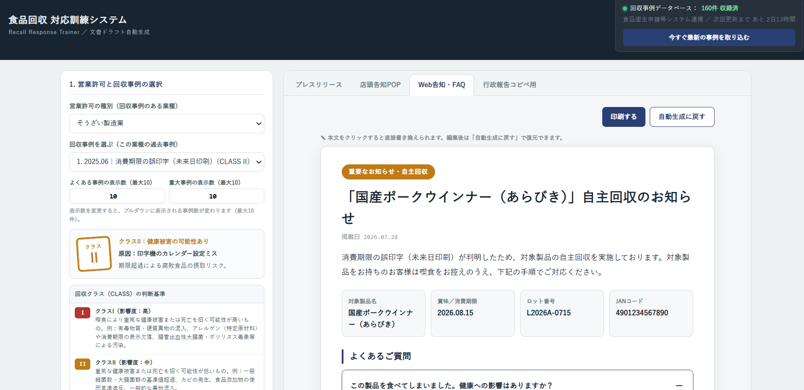
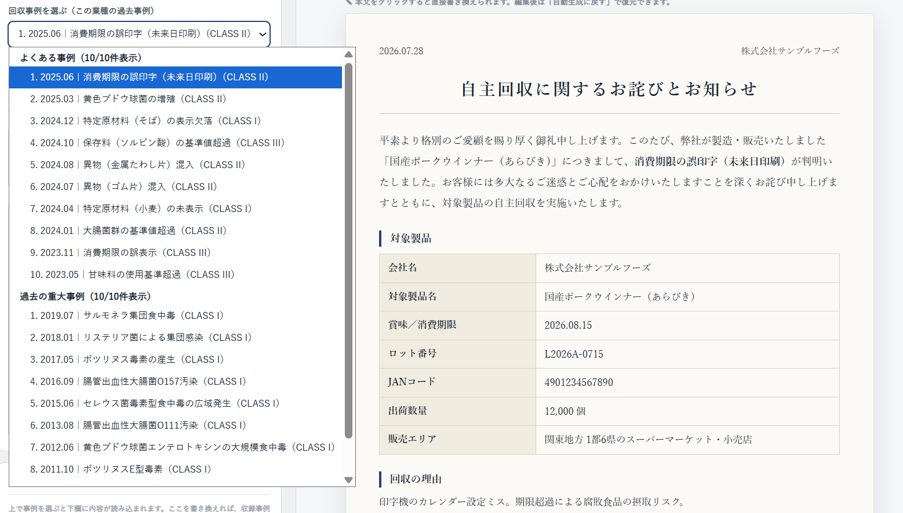

「うちの工場は長年事故を起こしていないから大丈夫」
もしあなたがそう考えているなら、非常に危険な状態です。現役の審査員として多くの食品工場を見てきましたが、「根拠のない自信」を持つ企業ほど、いざ事故が起きた際に致命的なダメージを受けます。
異物混入やアレルゲンの表示ミスなど、食品回収のリスクはどれだけ気をつけてもゼロにはなりません。問題は「起きた後」です。
訓練をしていない企業は、いざ事故が起きるとパニックになります。「どのロットを回収するのか」の判断が遅れ、初動が1日遅れるだけで、回収対象は市場に広く出回り、回収費用は数百万円から数千万円へと跳ね上がります。
事故が起きた時、具体的に何をすべきか把握していますか？
「とりあえず保健所に連絡すればいい」という認識は危険です。現在は保健所への連絡だけでなく、厚労省の「食品衛生等申請システム」への登録も必要不可欠です。慣れないシステム入力や行政対応に追われ、現場はさらなる混乱に陥ります。
さらに、回収で生じた欠品を補うための「リカバリー製造」も同時に進めなければなりません。
急遽ラインを動かし、原料メーカーなどのステークホルダー全体に緊急手配の対応を強いることになり、自社内だけの問題にとどまらず、多方面に多大な影響と迷惑をかけることになります。
最も恐ろしいのは、初動の不手際による「取引先からの信用の完全な喪失」です。スーパーなどの小売店は、対応の遅いメーカーの商品を二度と棚に置いてはくれません。たった一度のミスが、会社の存続を脅かすのです。
一方で、危機管理ができている企業は、定期的に「食品回収対応訓練」を実施しています。しかし、中小企業にとって、リアルなシナリオを考え、訓練を企画するのは非常にハードルが高いのも事実です。
「そもそも回収訓練って何をやればよいかわからない」という声に応え、誰でも簡単に実践的な訓練ができるようにするためにも、このアプリは開発されました。


そこで、厚生労働省の最新の事故事例データをもとにした
「食品回収対応訓練アプリ」を開発しました。
自社の業種と製品情報を入力するだけで、実例に基づくリアルな事故シナリオと想定被害額が自動生成されます。
JFS-A、JFS-B、JFS-C、ISO22000、FSSC22000などの
要求事項を満たす訓練の手間も省けます。
※メルマガ登録（無料）ですぐにご利用いただけます。
訓練アプリを無料で試してみる